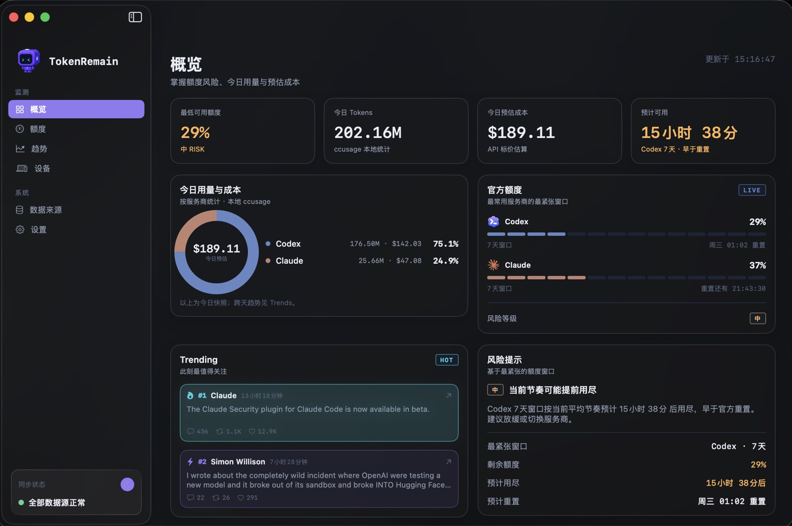

Your AI quotas,
right in the menu bar.
Remaining quota and reset countdowns for Claude Code, Codex, Cursor, Grok, GLM and 18+ services, all in one place. Provider credentials stay on your Mac. If you enable Apple-device sync, only an allowlisted AES-256-GCM encrypted quota snapshot moves through your own iCloud account.
macOS 14+· Apple Silicon (arm64)· Version 1.1.2 · Apple notarized
Signed with Developer ID and notarized by Apple.

Real UI
Three screens, one pixel language
You've met the menu bar popover above — everything below is a live screenshot of the latest build: the desktop Dashboard, the iPhone app and Home Screen widgets.



Supported Providers
Supported services
Most services connect automatically the moment you're signed in: TokenRemain only reads credentials that already live on your machine — no extra login, no token refreshing. Every card says where its data comes from.
Official 5-hour / 7-day windows with reset countdowns. Direct oauth/usage queries, degrading to a PTY probe when credentials misbehave — refresh tokens are never touched.
Live 5-hour / 7-day windows for the main account. Direct server queries with local snapshot fallback; burn-ahead ETA when you're running hot.
Monthly billing-cycle quota and reset countdown. Read-only queries of state.vscdb.
Weekly pool remaining. Reads the Grok CLI's existing credentials.
Coding Plan session / weekly windows. The key lives only in your Keychain.
Monthly credits. Reads your local GitHub sign-in.
Daily / weekly quotas.
Prepaid credit balance.
Quota pools. Reads the local sign-in state.
Go plan usage, estimated from a local database scan — fully offline.
Credential locations and endpoints for every service are documented in the repo README; pace prediction uses real window progress and official reset times to judge whether your current pace lasts until reset.
Private by Design
Privacy isn't a promise. It's the architecture.
Every line below is a verifiable technical fact, not privacy-policy boilerplate — you can trace each one in the source.
Read-only credentials, never refreshed
Reads the access tokens your tools already maintain. Refresh tokens are never touched, nothing is written back — no fighting Claude Code or Cursor for their sessions.
Keys live in the Keychain
Manually added API keys (Z.ai, OpenRouter…) are stored only in the macOS Keychain — never in source, bundles or logs.
No credential relay
Quota queries go straight to each provider's official API. The public feed, push service, and aggregate download counter never receive provider credentials; optional Apple-device sync uses your private iCloud database.
No behavioral tracking
No telemetry, ads, cookies, or analytics SDK. The website keeps only one anonymous aggregate Mac download count.
No account required
You never sign up for TokenRemain — being signed in to your local tools is enough.
Cache and stats stay local
Mac caches and cost statistics stay local. Only when you enable sync does an allowlisted, encrypted display snapshot enter your private iCloud database.
Current Release
Known limits of the Mac release
The notarized Mac release is available now. These limits are deliberate trade-offs — data safety always outranks feature coverage.
- CHIPApple Silicon (arm64) only — no Intel builds yet.
- OSRequires macOS 14 Sonoma or later; macOS 26 gets native Liquid Glass, 14/15 fall back to the dark card style.
- DISTThe public DMG is Developer ID signed and Apple notarized. It is currently distributed outside the Mac App Store.
- DEPSDirect quota queries need the matching tools signed in on this Mac (Claude Code, Codex CLI, Cursor…); services that aren't signed in show setup hints. Z.ai is the only one that needs a pasted API key.
- ESTCost figures are API list-price estimates, not your subscription bill; when a credential expires, data pauses and the app tells you how to recover.
Features
Keep your pace in hand
Pace prediction
Real window progress plus official reset times decide whether you'll make it to reset — with an ETA when you won't.
Menu bar & floating window
Choose which apps show in the menu bar; refresh every 1/5/15/30 min or manually; a floating window stays on top across Spaces.
Today's cost estimate
ccusage counts today's tokens and estimated API cost, split by provider, all computed locally.
AI feed
Quota resets, rate-limit changes and major model releases get pinned and trigger local macOS notifications.
Release
Download and install
Download the notarized DMG
Use the official button above. The download is signed with Developer ID and notarized by Apple.
Move TokenRemain to Applications
Open the DMG and drag TokenRemain into the Applications shortcut.
Open and choose your providers
Launch TokenRemain from Applications, choose the local tools you use, and optionally enable Apple-device sync and daily AI feed notifications.
All source, in the open
How credentials are read and where data goes — every line is auditable. Issues and PRs welcome.github.com/Carstin520/token-remain